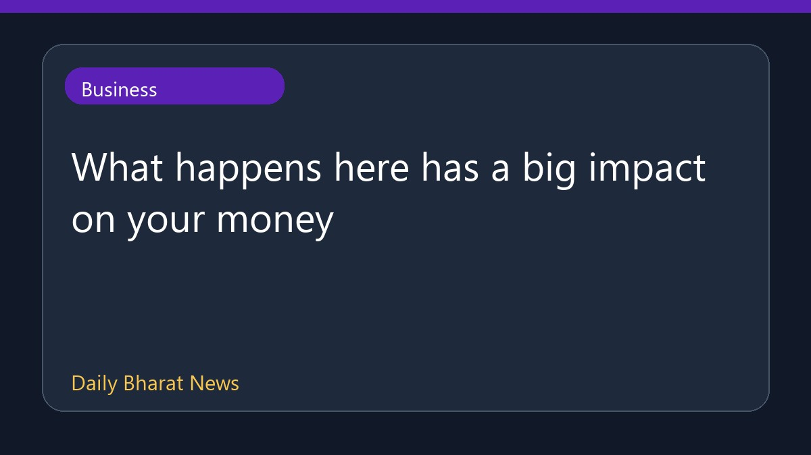

बीबीसी रिपोर्टर ने बैंक ऑफ इंग्लैंड के कामकाज को समझाया

बीबीसी बिजनेस रिपोर्टर डियरबेल जॉर्डन ने बैंक ऑफ इंग्लैंड के भीतर से यह समझाया है कि वहां होने वाली गतिविधियाँ लोगों के पैसों पर किस प्रकार बड़ा असर डालती हैं। इस रिपोर्ट में वित्तीय और आर्थिक फैसलों की कार्यप्रणाली पर प्रकाश डाला गया है, जिससे यह स्पष्ट होता है कि केंद्रीय बैंक की नीतियां आम नागरिकों के वित्त को कैसे प्रभावित करती हैं। उपलब्ध जानकारी सीमित है और इसमें इस बात पर ध्यान केंद्रित किया गया है कि बैंक के कार्य आम जनता के धन से किस प्रकार जुड़े हुए हैं।
मूल स्रोत: BBC Business
What happens here has a big impact on your money ↗
What happens here has a big impact on your money ↗